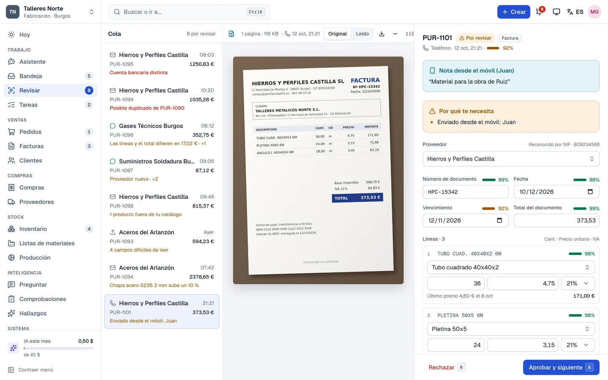
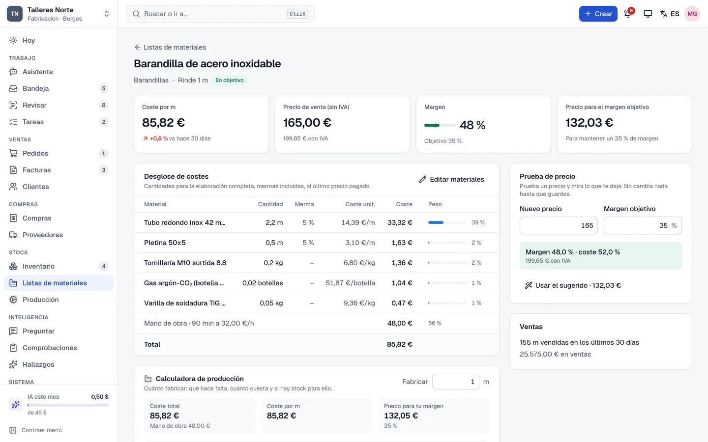

Para talleres y fabricantesFor workshops and manufacturers
La oficina de tu taller, al día sola Your workshop's office, up to date on its own
Las facturas, albaranes y tickets de tus proveedores se leen solos. El stock y el coste de cada material se actualizan, y las listas de materiales y la producción siempre saben lo que cuesta cada pieza. Tú solo revisas y apruebas. Your suppliers' invoices, delivery notes and receipts read themselves. Stock and the cost of every material update, and bills of materials and production always know what each part costs. You only check and approve.
La demo funciona en el navegador, sin instalar nada, con las cuentas inventadas de un taller metálico. The demo runs in your browser, nothing to install, with the made-up books of a metal workshop.

Cómo funcionaHow it works
Todo lo que llega se lee, se comprueba y se apunta en su sitio. Lo que tiene dudas te espera, con el original al lado. Everything that comes in is read, checked and booked where it belongs. Anything doubtful waits for you, with the original beside it.
-
1
Llega el documentoA document arrives
Por correo, por WhatsApp, en una carpeta del ordenador o con una foto del móvil de cualquiera del taller. By email, WhatsApp, a folder on the computer, or a photo from the phone of anyone in the workshop.
-
2
Se lee y se compruebaIt's read and checked
La IA lee el proveedor, las líneas, los precios y el IVA. Se comprueban los totales, la cuenta bancaria, los duplicados y las subidas de precio. The AI reads the supplier, lines, prices and VAT. Totals, bank details, duplicates and price rises are checked.
-
3
Tú lo apruebasYou approve it
Lo que tiene dudas espera en Revisar con el motivo y el original al lado. Se aprueba con una tecla. Anything unsure waits in Review with the reason and the original beside it. One key approves it.
-
4
Todo se pone al díaEverything catches up
El stock, el coste de cada material, las listas de materiales y los precios de venta sugeridos. Todo queda apuntado y se puede deshacer. Stock, the cost of each material, bills of materials and suggested selling prices. Everything is logged and can be undone.
Los móviles del tallerThe workshop's phones
Una foto, y está en la oficinaOne photo, and it's at the office
Cada trabajador con su móvil: foto al ticket del gasoil, al albarán del proveedor o a la factura, y llega a la oficina para revisarla. Ese móvil solo puede enviar fotos: no ve precios, clientes ni cuentas. Every worker with their own phone: a photo of the fuel receipt, the supplier's delivery note or the invoice, and it reaches the office to be checked. That phone can only send photos: it sees no prices, clients or accounts.
- Una foto por página: varias fotos son un solo documento.A photo per page: several photos make one document.
- Una nota para la oficina: «pagado en efectivo», «para la obra de Ruiz».A note for the office: “paid in cash”, “for the Ruiz job”.
- Sin cobertura, se guarda en el móvil y se envía solo después.No signal? It's kept on the phone and sent by itself later.
- Ve si la oficina lo archivó o lo rechazó, y por qué.It sees whether the office filed or rejected it, and why.
- Sin instalar nada: se vincula con un código QR desde el ordenador de la oficina.Nothing to install: it's linked with a QR code from the office computer.
Producción y costesProduction and costs
Lo que cuesta cada pieza, hoyWhat each part costs, today
Escribe una vez la lista de materiales de cada producto: materiales, mermas y mano de obra. Cada factura que llega recalcula su coste y te sugiere el precio para tu margen. Para fabricar 40, la calculadora dice qué falta y lo pide a cada proveedor. Write each product's bill of materials once: materials, waste and labour. Every invoice that arrives recalculates its cost and suggests the price for your margin. To make 40, the calculator says what's missing and orders it from each supplier.
- Registrar una producción gasta los materiales y suma el producto al stock.Recording a run uses up the materials and adds the product to stock.
- Los productos a medida gastan sus materiales al entregarse.Made-to-order products use up their materials when delivered.
- «Se rompieron 2 bastidores»: se lo dices al asistente y lo apunta.“Two frames broke”: tell the assistant and it books it.

Qué incluyeWhat's included
Compras y RevisarPurchases and Review
Facturas, albaranes y tickets leídos y comprobados; también facturas electrónicas (Facturae, CFDI).Invoices, delivery notes and receipts read and checked; e-invoices too (Facturae, CFDI).
Proveedores y preciosSuppliers and prices
Historial de precios, avisos de subidas y cambios de cuenta bancaria que hay que verificar.Price history, warnings about rises, and bank-detail changes to verify.
InventarioInventory
Stock que cuadra con sus movimientos, puntos de pedido y pedidos a proveedor por correo.Stock that matches its movements, reorder points and purchase orders by email.
Pedidos y facturasOrders and invoices
Pedidos de clientes por correo o WhatsApp con respuesta preparada; la factura se prepara al entregar.Client orders by email or WhatsApp with a reply drafted; the invoice is drafted on delivery.
PreguntarAsk
«¿Quién nos debe dinero?», «¿qué material ha subido más?»: respuestas sacadas de tus cuentas.“Who owes us money?”, “which material went up most?”: answers from your own books.
Comprobaciones y deshacerChecks and undo
Cada noche se revisa que todo cuadre. Todo lo que hace queda en Actividad y se puede deshacer.Every night it checks that everything adds up. Everything it does is in Activity and can be undone.
Tus datos se quedan contigoYour data stays with you
System 2 Manufacturing se instala en un ordenador de tu oficina, con Windows. Tus datos se guardan ahí, no en la nube; solo salen los documentos que lee la IA. Cada noche se hace una copia de seguridad. Los móviles se conectan por la wifi de la oficina o, desde fuera, por Tailscale. System 2 Manufacturing is installed on a computer at your office, running Windows. Your data is kept there, not in the cloud; only the documents the AI reads leave it. A backup is made every night. Phones connect over the office Wi-Fi or, from outside, through Tailscale.
Lo que todavía no haceWhat it doesn't do yet
- · Enviar las facturas a Verifactu ni timbrarlas (CFDI): eso necesita un proveedor certificado.· Send invoices to Verifactu or stamp them (CFDI): that needs a certified provider.
- · Facturas rectificativas, cobros parciales ni conexión con el banco.· Credit notes, part payments or a bank connection.
- · La IA cuesta unos céntimos por documento y necesita internet; con una foto mala puede equivocarse, por eso lo dudoso siempre espera a una persona.· The AI costs a few cents per document and needs internet; a bad photo can fool it, which is why anything unsure always waits for a person.
Míralo funcionarSee it working
Aprueba facturas, mira las listas de materiales, registra una producción y envía una foto desde el móvil. Nada se guarda: recargar la página lo deja como al principio. Approve invoices, look at the bills of materials, record a production run and send a photo from the phone. Nothing is kept: reloading the page puts it all back.